How to fight the recent fentanyl crisis in San Francisco?
By Maria Vendas & Diogo Forte·Social Data Analysis·April 2026
San Francisco is currently undergoing a fentanyl crisis, as many other cities in the United States. A crime data analysis revealed that the city has suffered a previous drug crisis and was able to mitigate the issue. Could we use previous data on drug/narcotics crime to fight this new epidemic?
Section 01
Crime Evaluation in San Francisco
To study the crime evolution in the city of San Francico we used 2 datasets from the SF OpenData platform:
the "Police Department Incident Reports frim 2003 to 2018" and the "Police Department Incident Reports
from 2018 to 2025". These datasets contain detailed records of crime incidents reported to the San Francisco
Police Department, including information on the type of crime, location, date, and time.
By analyzing these datasets, we can gain insights into crime trends, patterns, and hotspots
across different neighborhoods in San Francisco.
Category
Drugs/Narcotic
Dataset period
2003-2025
Criminality throughout the years
Share of total incidents across all recorded years
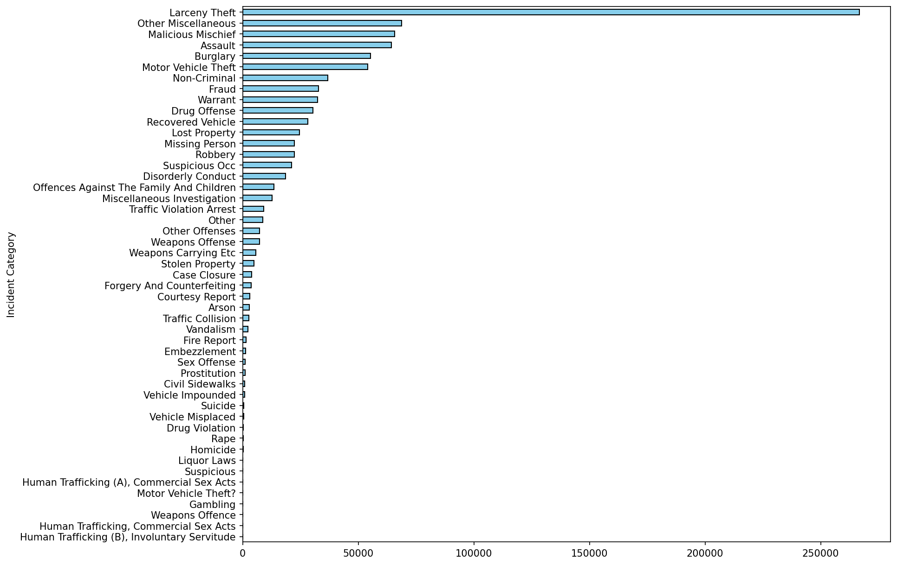
The log-scale view below reveals the full range of crime types — from thousands of theft incidents down to rare offences — without the most frequent categories flattening everything else into invisibility.
Crime by category (log scale)
Logarithmic scale to compare across orders of magnitude
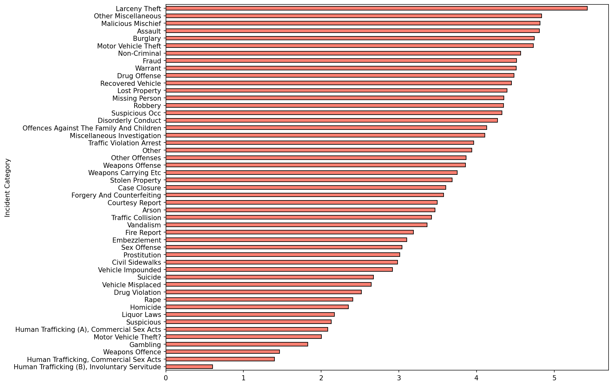
Key insight: Theft-related crimes account for a disproportionately large share of incidents, while violent crimes — though serious — represent a much smaller fraction of the total caseload.
Crime category over date (log)
Temporal distribution of categories on a log scale
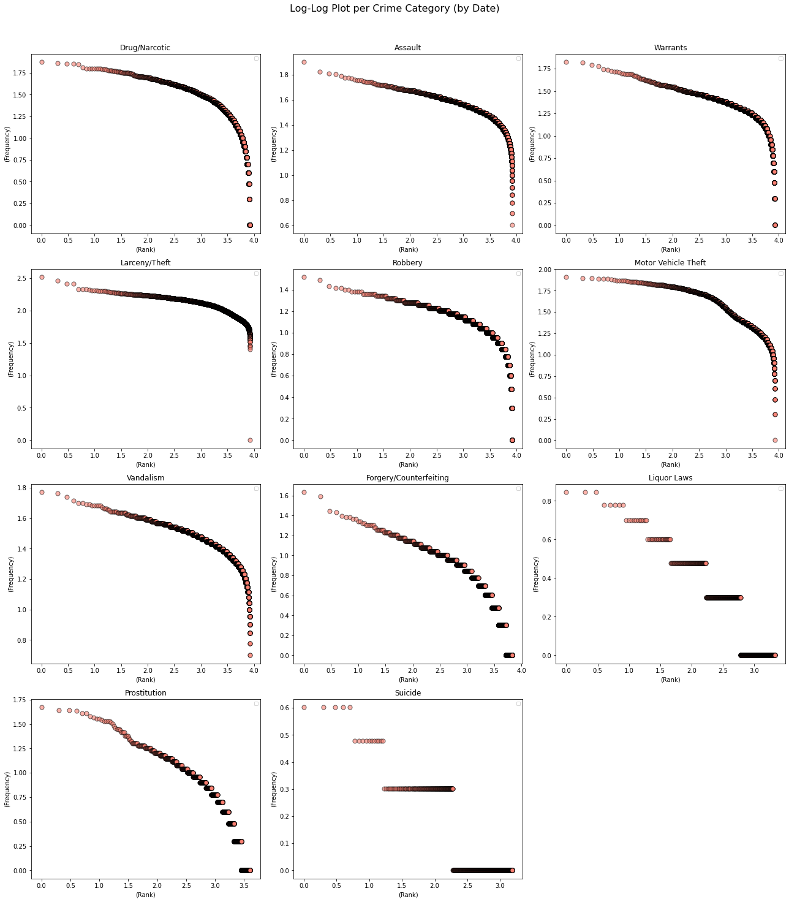
Distribution of theft incidents (log)
How theft sub-types are distributed
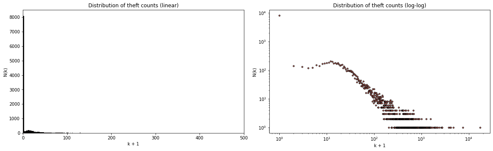
Section 02
How has crime changed over time?
Crime is not static. Looking at trends over the years reveals important shifts — some driven by policy changes, others by social and economic forces. The overall trend shows notable variation both before and after key events like the 2008 financial crisis and the COVID-19 pandemic.
Yearly crime trends
Total incidents per year, all categories combined
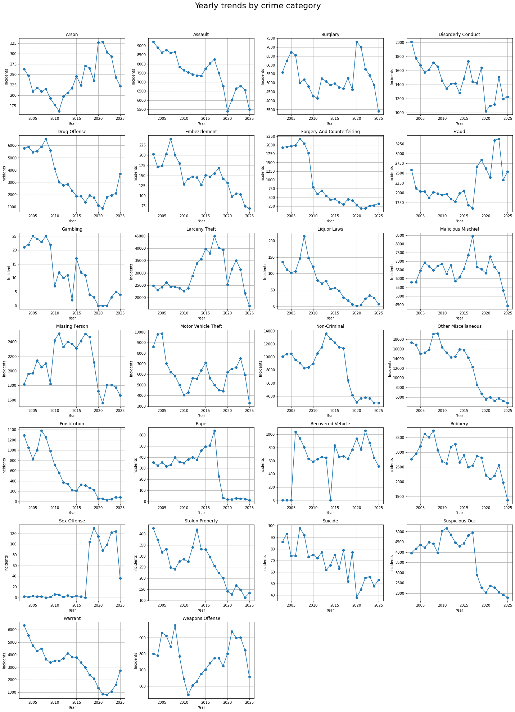
Crime trends over time by category
Annual totals broken down by crime type
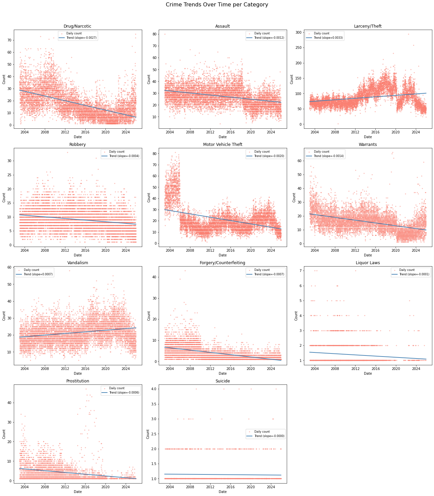
Linear regression helps separate the signal from the noise. Below, trend lines for each category show whether crime is genuinely rising, falling, or staying flat over the long run.
Crime trends — linear regression
Long-run direction of each crime category
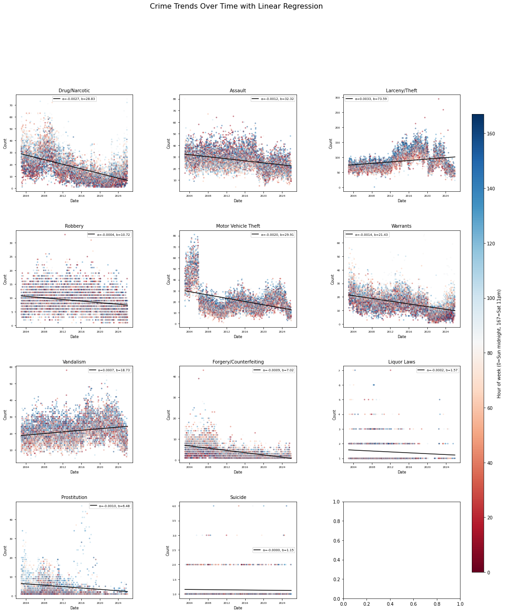
Interactive
Explore crime trends by district
Filter by district and crime type — click to interact
Interactive
Weekly crime amounts by district
Day-of-week patterns across neighbourhoods
Section 03
Where does crime concentrate?
Crime is far from evenly distributed across San Francisco's neighbourhoods. Some districts consistently see higher incident rates — a pattern that holds even when controlling for population size and density.
Crime by district
Total incidents per police district
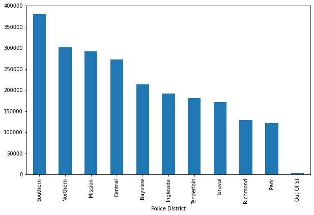
Crime by district (bar chart)
Ranked comparison across all districts
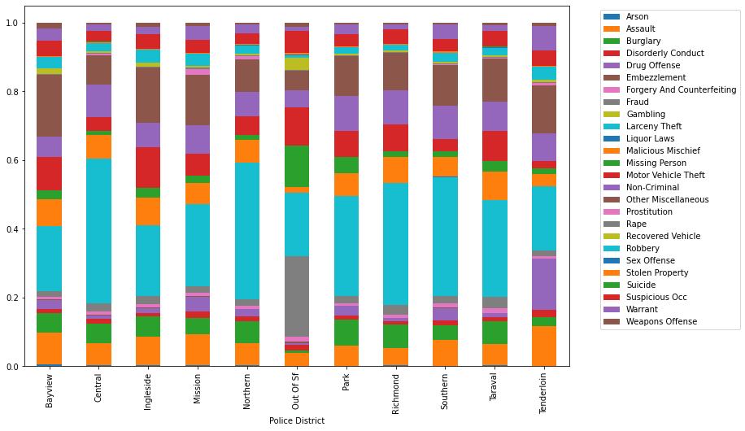
Heatmap — crime by district and category
Which crime types dominate in each district
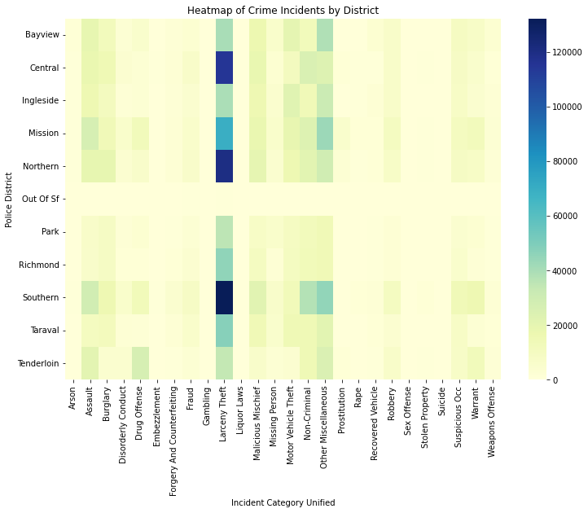
The pairwise correlation plots below reveal which crime categories tend to co-occur across districts — a signal of underlying social conditions rather than coincidence.
Pairwise category correlation
How crime types relate to one another
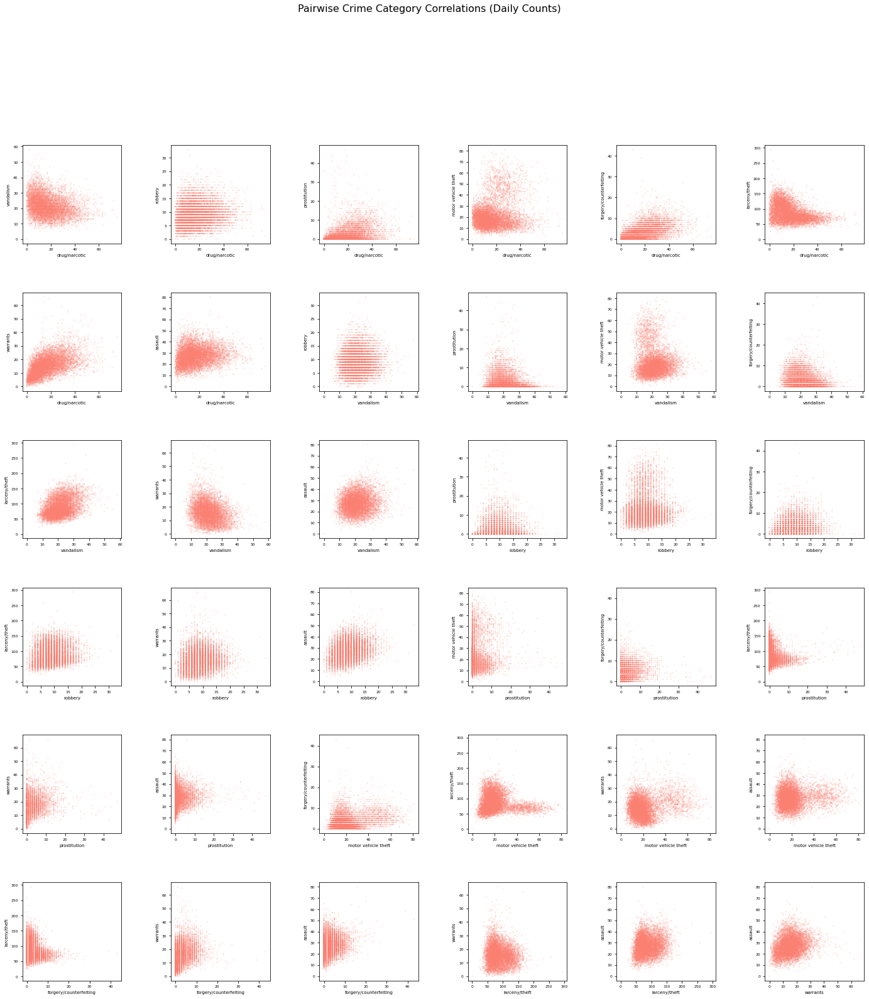
Pairwise crime correlation
Correlation matrix across crime types
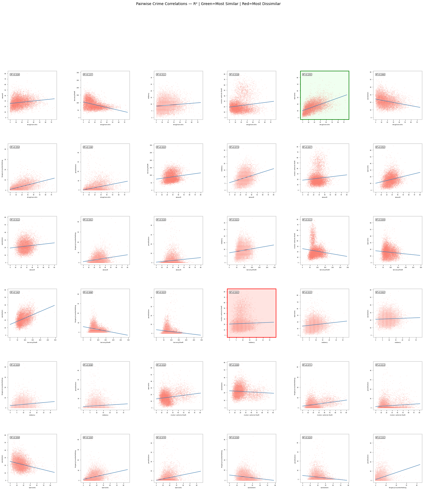
Crimes per 100m² by district
Density-adjusted comparison — less than 100m² threshold
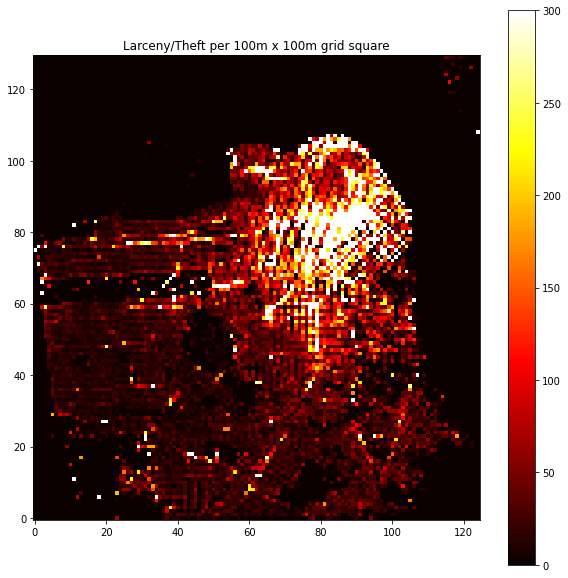
Crime density — SF 100m² grid
Full spatial density across the city
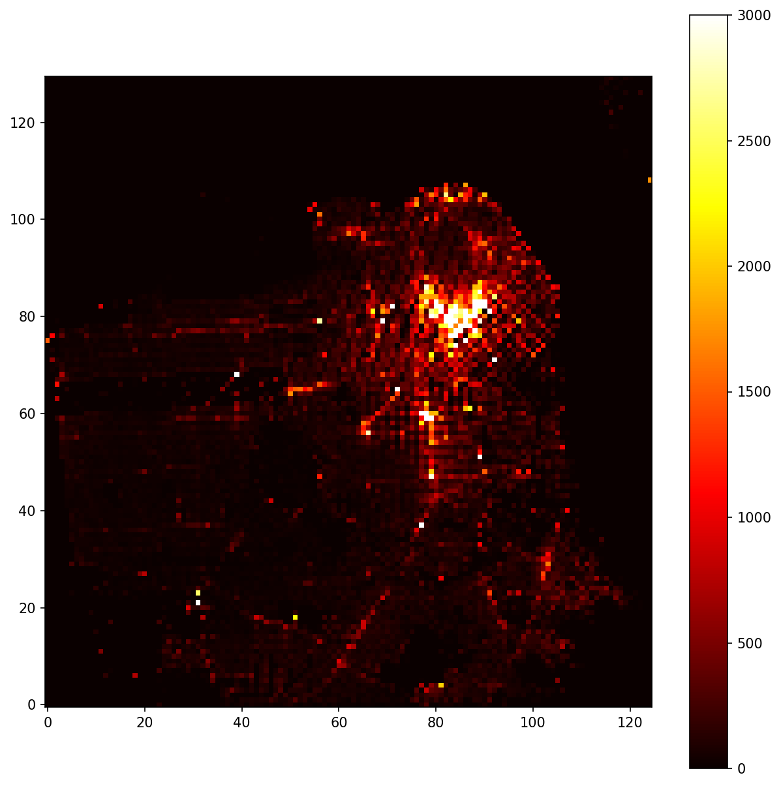
Crime rate by district — regression
Regression plot per district
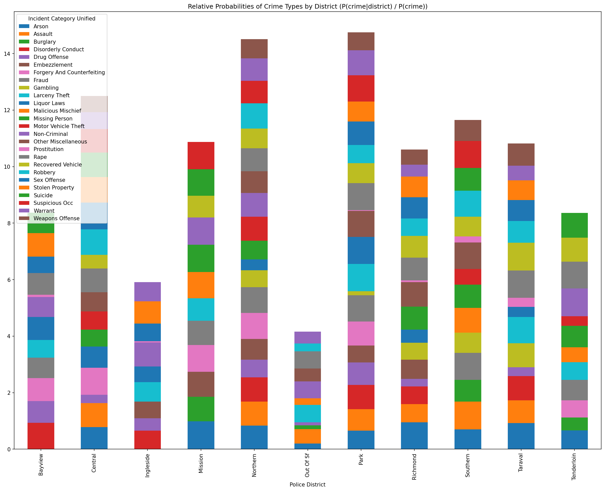
Crime rate heatmap by district — regression
Regression heatmap view
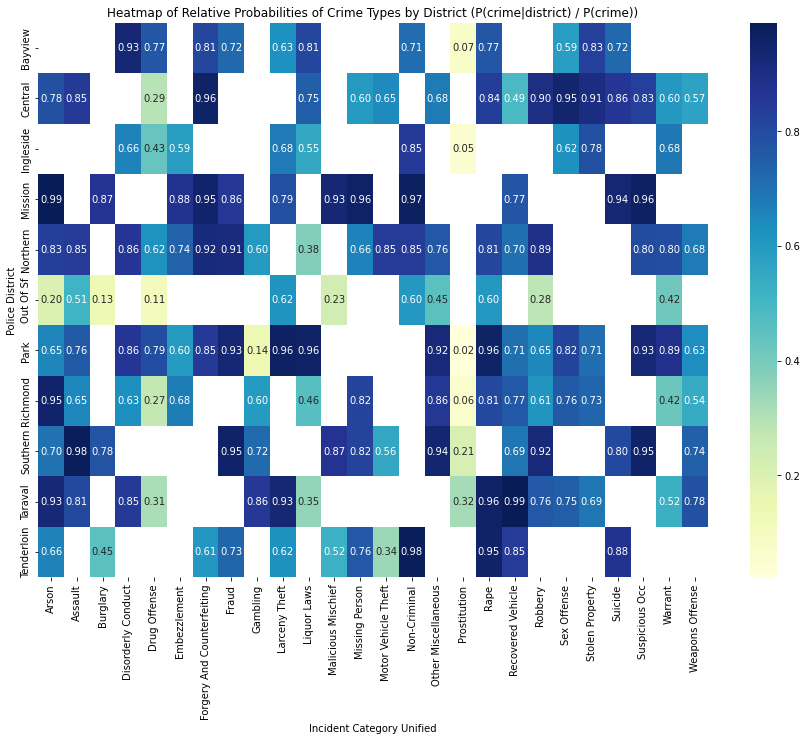
Interactive
Crime rate by district — interactive
Filter and explore by district
Section 04
Mapping crime across the city
Maps bring the spatial dimension to life. The interactive maps below let you zoom in, pan around, and filter by crime type — revealing geographic clusters that static charts cannot fully convey.
Interactive
Crime incident map
All recorded incidents plotted by location — zoom and filter to explore
Interactive
Crime density heatmap
Hotspot intensity map across SF neighbourhoods
Note: The prostitution heatmap below highlights a specific crime category that shows a highly concentrated spatial pattern — a common finding in urban crime research.
Interactive
Prostitution incidents heatmap
Spatial concentration of a specific crime category